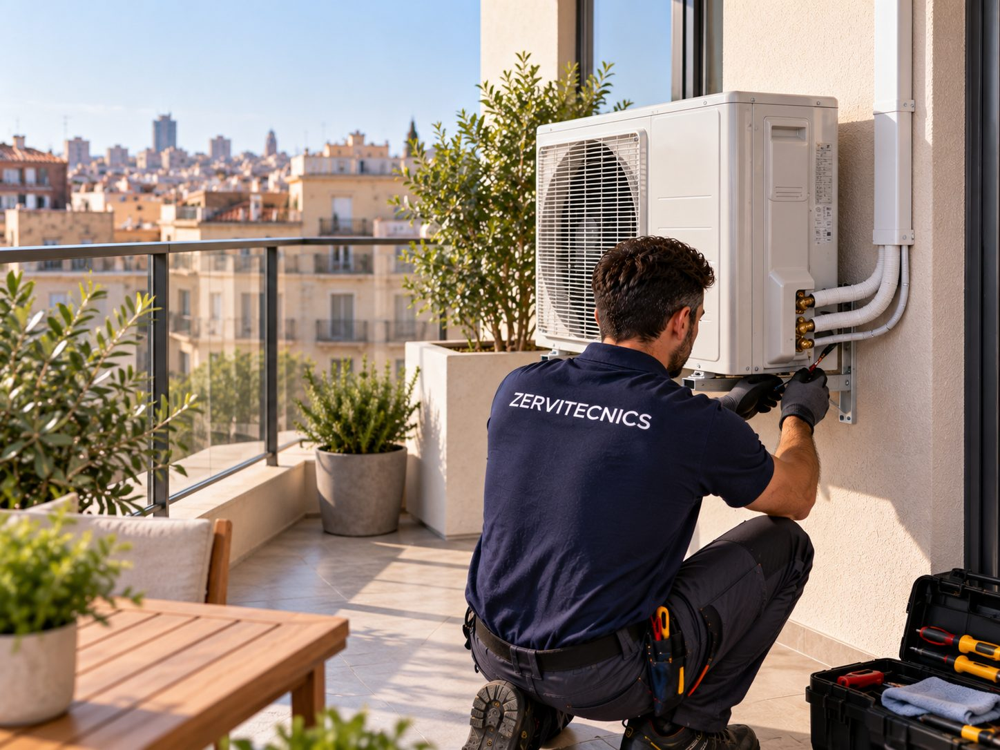

Siete factores técnicos que determinan dónde colocar el condensador exterior, más los errores más comunes que reducen la eficiencia o generan conflictos con vecinos.

La ubicación del condensador (unidad exterior) es una de las decisiones más importantes de la instalación. Un mismo equipo puede rendir un 15-25 % menos y hacer el doble de ruido si se coloca mal. Estos son los factores que un instalador serio evalúa antes de decidir dónde va.
La unidad exterior necesita aire libre para disipar calor (o extraerlo en modo calefacción). Requiere al menos 30 cm libres en la parte trasera (entrada de aire) y 1,5-2 m libres frente a la rejilla frontal (salida). Nunca ir en cuartos cerrados o armarios sin rejillas amplias.
El compresor genera 47-58 dB(A) a 1 m (equipos modernos inverter). La normativa de Barcelona limita a 30 dB(A) por la noche en dormitorios ajenos. Mantén al menos 3-5 m de distancia de ventanas de dormitorios de vecinos y no la sitúes frente a un patio interior compartido en línea directa.
La instalación estándar incluye 3 m de tubería y desagüe. A partir de ahí se cobra por metro adicional (55-80 €/m según capacidad). El máximo técnico ronda los 15-20 m para split residencial. Cuanta más distancia, más pérdida de rendimiento y más carga de gas.
Evita colocarla en fachada sur/oeste al sol directo de tarde en verano. El equipo pierde 5-10 % de eficiencia frigorífica cuando la carcasa se calienta por encima de 40-45 ºC. Si no hay alternativa, plantea sombreado con visera o rejilla ventilada — nunca cerrar por completo.
Filtros, limpieza de serpentín con Karcher, revisión eléctrica: el técnico tiene que llegar de pie con espacio para trabajar — no vale colgar la unidad en una cornisa a 4 m sin acceso o encajada tras un armario sin desmontar. Piénsalo antes de decidir la posición.
La unidad exterior en modo calefacción y desescarche produce agua de condensación por debajo. Debe drenar a un desagüe existente o a una zona donde no manche fachada, moleste a vecinos ni forme charcos permanentes que congelen en invierno.
Los soportes deben ir anclados a muro macizo o forjado, no a tabiques huecos o chapas. Con silentblocks (tacos de goma) entre soporte y unidad para amortiguar vibraciones que se transmiten al edificio y molestan a la vivienda de abajo. Fijaciones inox si están al exterior — el acero galvanizado se oxida a los 3-4 años.
| Ubicación | Prioridad | Comentarios |
|---|---|---|
| Terraza propia | Primera opción | Sin problemas de normativa, buena ventilación, acceso fácil. Ideal. |
| Cubierta transitable | Muy buena | Requiere autorización de la comunidad si es común. Excelente ventilación y silencio. |
| Patio interior | Buena | Cuidado con la reverberación del ruido en patios cerrados y con vecinos frente a frente. |
| Balcón propio | Aceptable | Verifica normativa de comunidad. Ojo con el ruido si hay dormitorios pegados. |
| Fachada interior no visible | Última opción | En Barcelona sólo si no hay alternativa; requiere comunicación al Ayuntamiento. |
| Fachada exterior visible | Prohibida por defecto | Restringido por la Ordenança del Paisatge Urbà — sólo excepcional en edificios sin alternativa. |
| Interior de vivienda | Nunca | Falta de renovación de aire, sobrecalentamiento, averías y ruido interior. |
Barcelona ciudad tiene normativa específica. La Ordenança dels Usos del Paisatge Urbà de Barcelona establece que las unidades exteriores deben instalarse prioritariamente en cubierta y no ser perceptibles desde vía pública. En zonas como Ciutat Vella o Eixample con protección patrimonial, la fachada visible está prohibida salvo casos muy excepcionales. Ver nuestra guía específica de normativa.
Es el error más habitual en reformas. El armario "estético" hecho a medida sin cálculo de ventilación acaba con el equipo protegido por sobrecalentamiento, apagándose cada 20 minutos. Si necesitas ocultarla por estética, las rejillas deben cubrir al menos el 60 % de la superficie frontal y lateral, y el volumen del armario debe ser 2-3 veces el volumen del equipo.
La vibración del compresor amplifica el ruido en el tabique como una caja de resonancia. Y con el tiempo, los tacos se aflojan. La unidad debe ir siempre en muro macizo, forjado o soporte metálico anclado a estructura.
Sin silentblocks, la vibración pasa directa al soporte, al muro y a la vivienda del vecino de abajo. Un tema recurrente en juntas de comunidad. Los silentblocks buenos cuestan 20-30 € y evitan el 90 % de las quejas por ruido.
Colocarla a 4 m de altura sin escalera fija ni acceso desde terraza. En 3-5 años, cuando toque limpieza de serpentín exterior con Karcher (mantenimiento correctivo, 130 € + IVA), habrá que sumar coste de plataforma elevadora o andamio — cuando pudo evitarse en el momento de la instalación.
En verano no hay problema, pero en invierno la unidad hace desescarche cada pocas horas y suelta agua. Sin desagüe canalizado, esa agua mancha la fachada, cae al balcón del vecino, o forma placas de hielo. Debe drenar a un sumidero o desagüe existente.
Aunque cumpla dB(A) en ficha, el ruido a 2 m de una ventana abierta en verano es insoportable — te van a poner denuncia. Piensa siempre en el vecino cercano cuando decidas la ubicación.
¿Estás planificando la instalación? Nuestra página de instalación personalizada explica cómo evaluamos cada caso con visita gratuita, medimos con láser y decidimos la mejor ubicación técnica y normativa. Para proyectos más complejos (patios interiores irregulares, cubiertas con desniveles, reformas con falso techo o instalaciones de conductos) ofrecemos levantamiento con escáner 3D para obtener una vista precisa y completa del espacio, anticipar interferencias y optimizar el trazado de tuberías. Ver también precios por tramos de capacidad.
La ubicación ideal es la cubierta o terraza propia del edificio, en zona bien ventilada, a la sombra o con protección solar, sin obstáculos frente a la salida de aire, accesible para mantenimiento y a distancia razonable de ventanas de vecinos por el ruido. En Barcelona la fachada exterior está restringida por la Ordenança del Paisatge Urbà — hay que priorizar terraza o patio interior.
Con tubería estándar de 1/4"-3/8", los fabricantes admiten hasta 15-20 metros lineales para split residencial (algunos modelos multisplit llegan a 30-50 m). Cada metro adicional sobre los 3 m que incluye la instalación estándar tiene un sobrecoste de 55-80 €/m según capacidad del equipo. Cuanta más distancia, más pérdida de eficiencia y más gas necesario.
En Barcelona la fachada visible desde vía pública está restringida por ordenanza municipal (Ordenança dels Usos del Paisatge Urbà). Se prioriza terraza o cubierta. En edificios sin terraza puede autorizarse fachada interior o patio, siempre con criterios de integración (ocultación, alineación con huecos, integración cromática) y previa comunicación al Ayuntamiento. Ver nuestra guía de normativa.
Un equipo doméstico moderno (inverter) hace entre 47 y 58 dB(A) a 1 metro. Es equivalente a una conversación en voz baja. A 3-5 metros se percibe como zumbido de fondo. Los equipos antiguos (on/off) pueden llegar a 62-68 dB, notablemente más molestos, especialmente al arrancar y parar.
Sí. La unidad exterior necesita renovar continuamente el aire para poder disipar el calor (o extraerlo en modo calefacción). Colocarla en un cuarto cerrado, un armario sin rejillas o un espacio confinado provoca sobrecalentamiento, apagados por seguridad y averías tempranas del compresor.
Sólo si tiene rejillas o aperturas permanentes que garanticen renovación de aire equivalente al exterior. Un balcón acristalado sin aperturas no vale — el aire caliente que suelta la unidad se acumula, sube la temperatura ambiente y el equipo pierde rendimiento hasta parar.
Sí en cualquier instalación urbana con vecinos. Sin silentblocks (unos tacos de goma entre el soporte y la unidad), la vibración del compresor se transmite al muro y al edificio — es la principal causa de quejas de vecinos por ruido, especialmente por la noche. Cuestan 20-30 € y evitan la mayoría de conflictos.
Visita gratuita, evaluación técnica y propuesta que cumple normativa y protege la eficiencia.